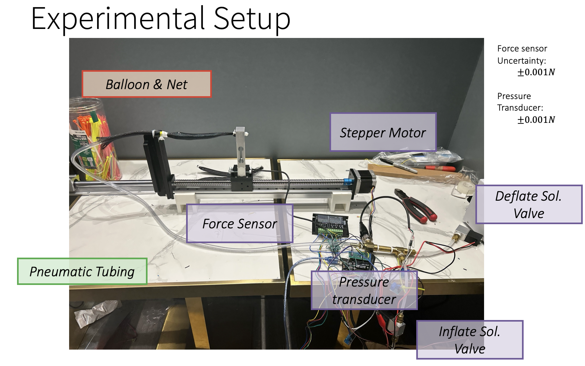

← Back to Projects
Case study
Air Muscle (PAM)
Pneumatics
Hysteresis
Model vs. Data
Balloon-in-braid actuator: derive geometry, add balloon pressure model (e.g., Mooney–Rivlin), and use virtual work to predict force–contraction; validate with a force sensor rig.
What I built and tested
- Developed an experimental model for PAM force–contraction and hysteresis.
- Designed and machined a linear test rig with a stepper-driven carriage to apply controlled strain.
- Coded an Arduino to automate inflate/deflate cycles and synchronized sampling.
- Soldered & integrated sensors: Wheatstone-bridge force sensor, pressure transducer, and stepper motor driver; added solenoid valves for precise inflation/deflation.
- Wrote automation so the rig could run unattended while I worked on other IYPT problems.
- Presented results at the 38th IYPT (Sweden).
Inflation/Deflation Loop
Short loop — smaller and smoother than a GIF.
Experimental Setup

Labeled view of the test bench (force sensor, pressure transducer, solenoids, stepper).
Tip: If the embed doesn’t display well on mobile, use “Open in new tab”.